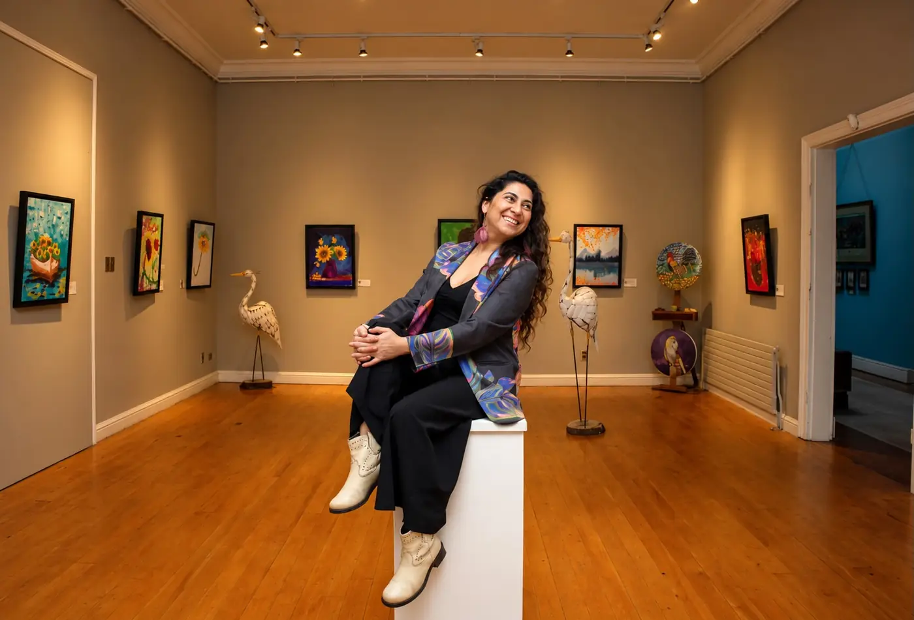
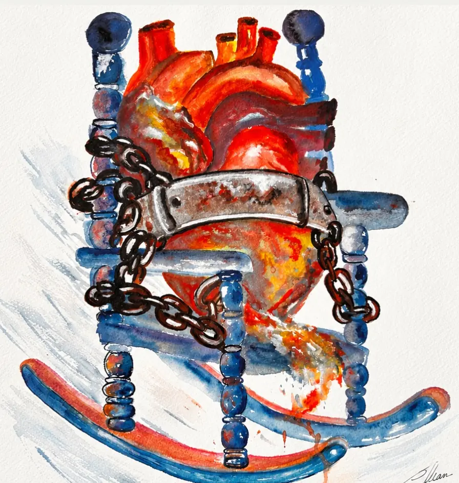
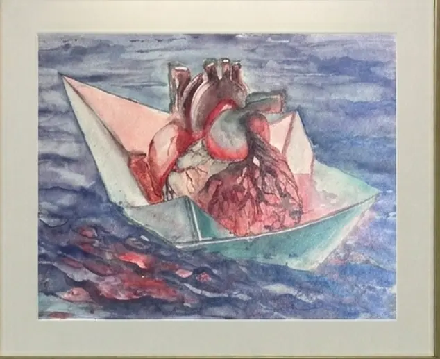
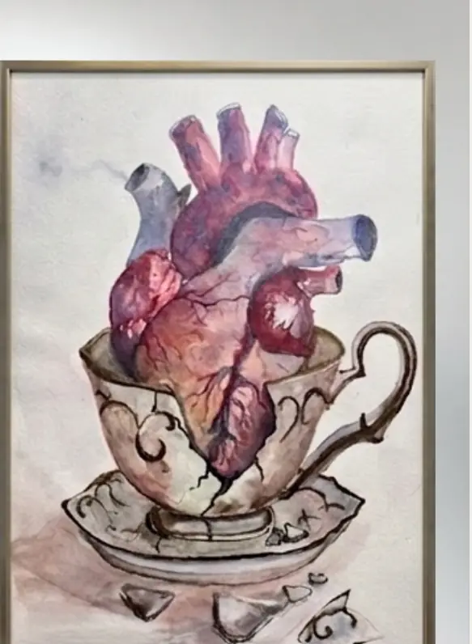
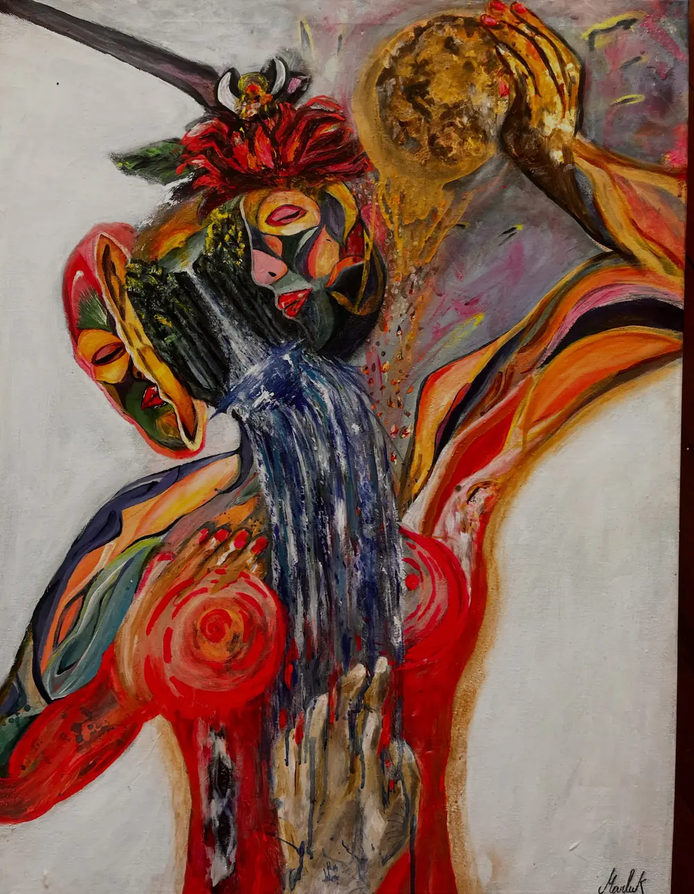
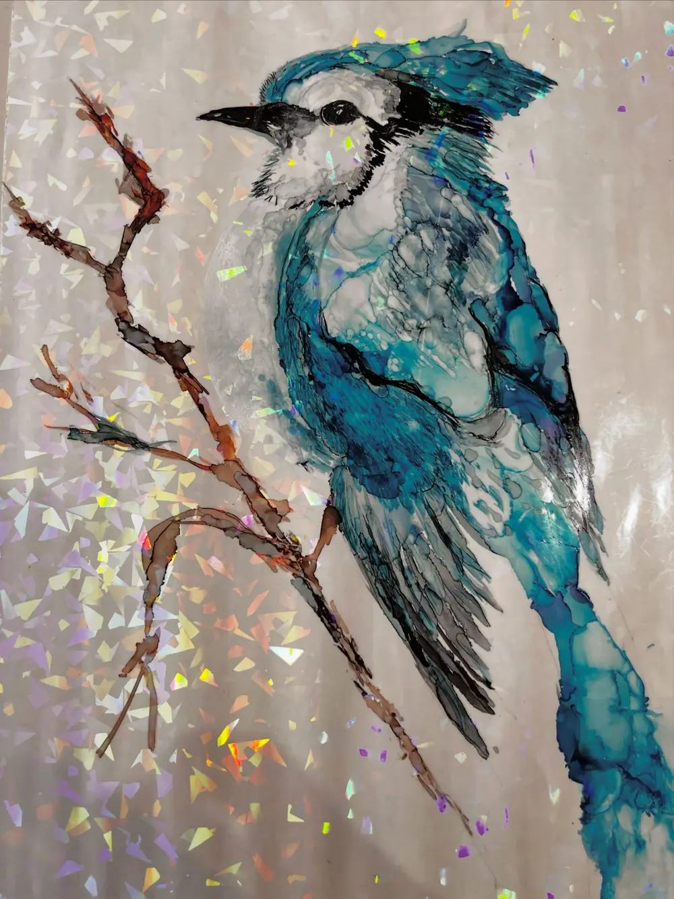
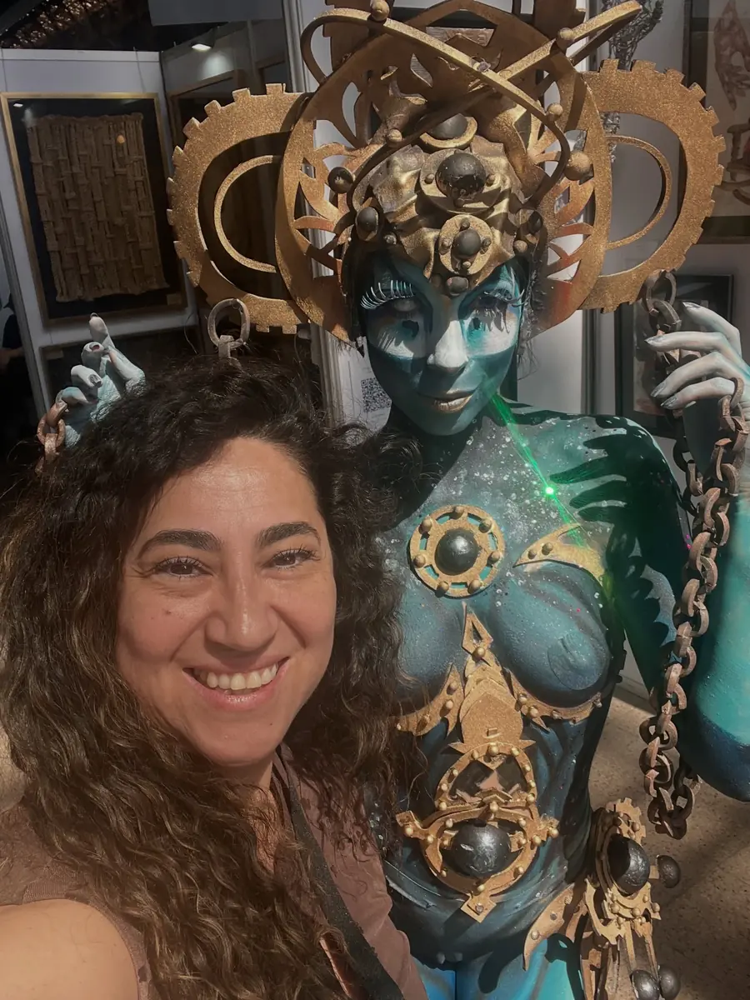
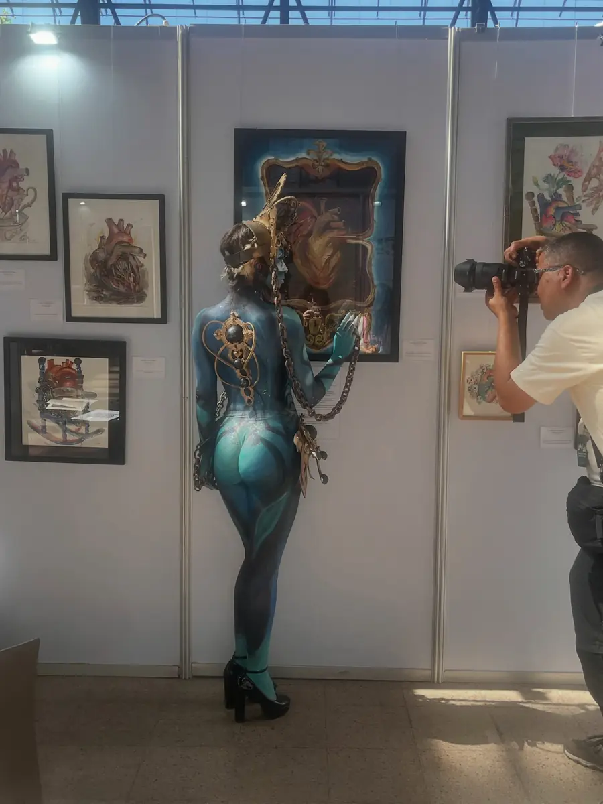
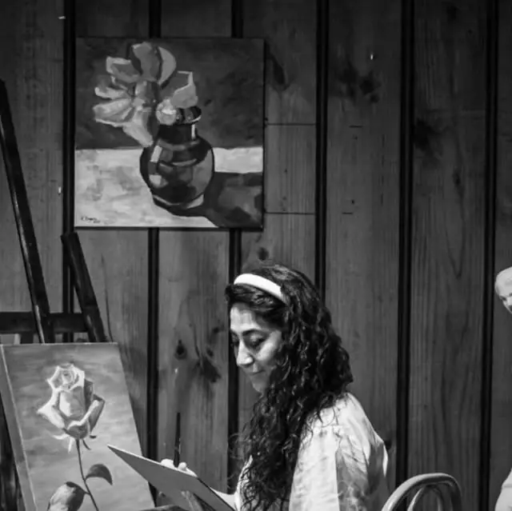

Artista visual · Medical Art
Mary Quinteros Alvarado
Pinta corazones anatómicos como si fueran casas: con puertas, grietas, escaleras y ventanas. Anatomía, memoria y vínculo, en acuarela, óleo y acrílico.
Clem

La Arquitectura del Ser
«El ser humano no es una obra terminada. Somos una arquitectura en permanente construcción. Una grieta puede ser dolor o puede ser el lugar por donde finalmente entra la luz.»
«Yo pongo el corazón. Construyo el espacio. Tú decides cómo habitarlo.»
— Mary Quinteros
Obra
Corazones que se pueden habitar.
Una selección de la serie «La Arquitectura del Ser» y de «Corazones Vivos · Arquitecturas emocionales», 2026.

Corazón lunar
Acuarela · 2026 · La Arquitectura del Ser
Tras viajar, la Luna seguía apareciendo. Aquí el corazón se vuelve paisaje lunar: su cráter reúne lo que vemos afuera y lo que guardamos dentro. Inspirada en los cielos de James Turrell.

El corazón en la mecedora
Acuarela · 2026 · Presentada en Art Week Chile
La mecedora, que debería ser descanso, se vuelve encierro; las cadenas son los miedos que no nos dejan avanzar. Y aun así, el corazón sigue latiendo.

Arquitectura del Ser
2026
«Cuando me miro, encuentro todo lo que me habita: el amor que me sostiene, las heridas que aún cuido y los sueños que abren nuevas ventanas.»

Let Love Flow
Acuarela sobre papel · 38 × 26 cm · 2026 · Corazones Vivos
Un corazón que navega en un barco de papel.
Obra disponible
Corazón en la taza
Acuarela · 2026 · La Arquitectura del Ser
La obra con la que Art Week Chile presentó a Mary entre sus artistas de 2026.

Entre la tierra y el universo
Pintura · 2026
Una figura se eleva, la cascada la atraviesa y una flor roja nace entre sus pensamientos. Arriba, una mano sostiene un mundo dorado.

Fuera de serie
Argentina
Tintas al alcohol sobre papel holográfico · 2026
Pintada con la técnica de soplado: con un soplador va guiando la tinta y cada soplido se transforma en una pluma. Los reflejos del papel la hacen brillar con la luz.
Exposiciones
Art Week Chile 2026
Centro Cultural Estación Mapocho, Santiago · 6 al 8 de noviembre de 2026.
Art Week Chile la sumó a su edición 2026 con «La Arquitectura del Ser»: una serie que busca «representar la solidez de la estructura interna a través de la riqueza del óleo y la energía del acrílico».
En su stand pasó algo que nadie planeó: una artista de body painting llegó con el cuerpo pintado y los colores de su piel conversaron con los de sus cuadros. Los fotógrafos se acercaron y se armó una pequeña exposición dentro de la exposición.
- Art Week Chile 2026, Estación Mapocho, Santiago
- Exposición en Bariloche, Argentina
- Curadora de 8 exposiciones de sus alumnos en Valdivia, entre ellas «Generación Arteluk» en el Centro Cultural El Austral (5.000 visitas)



Quién es
Artista, psicóloga y profesora.
Mary Quinteros Alvarado firma su obra como Clem. Es ingeniera en Administración de Empresas, magíster en Psicología Infantojuvenil y coaching, y tiene un postítulo en Arteterapia.
Fundó Arteluk en Valdivia, donde hoy enseña arte a más de 50 niños y jóvenes. Pinta en la misma sala donde hace clases, un lugar que ella siente que es «de mis niños y niñas».
¿Te interesa una obra o un encargo?
Las obras originales y los encargos se conversan directo con Mary por Instagram.